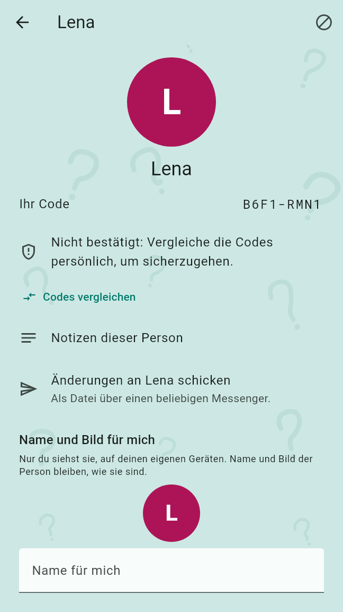
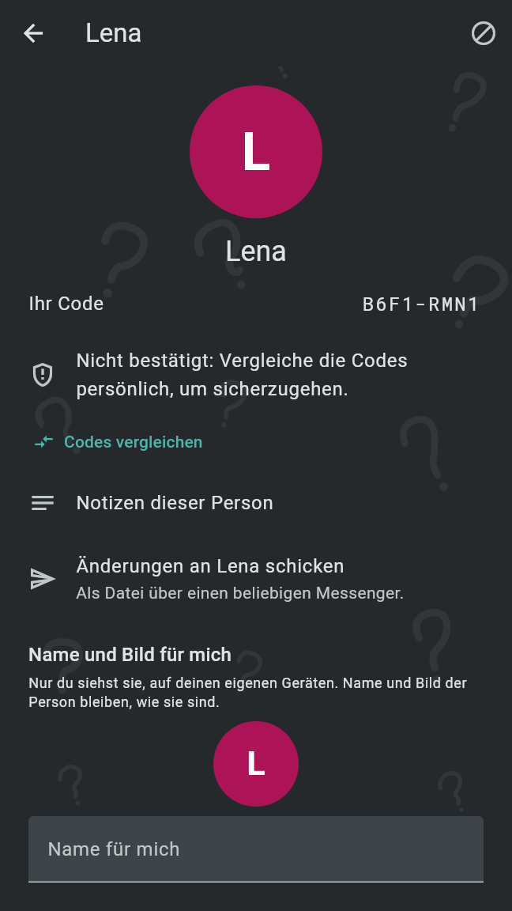
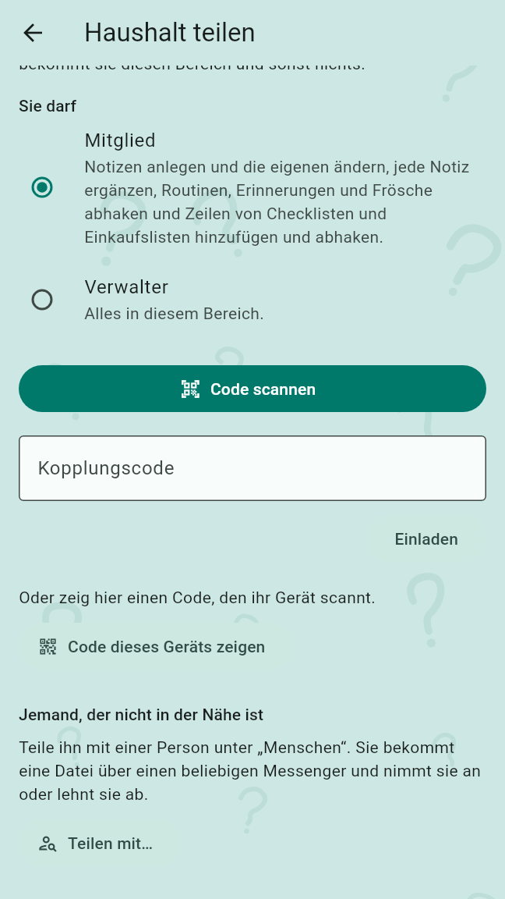
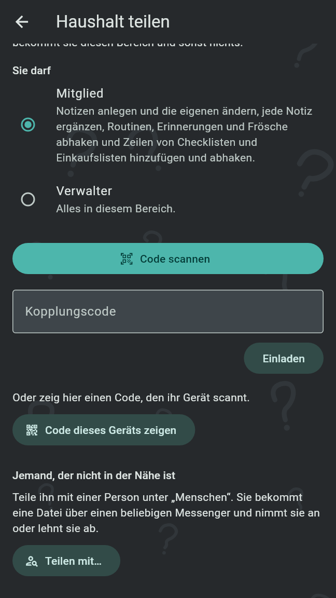
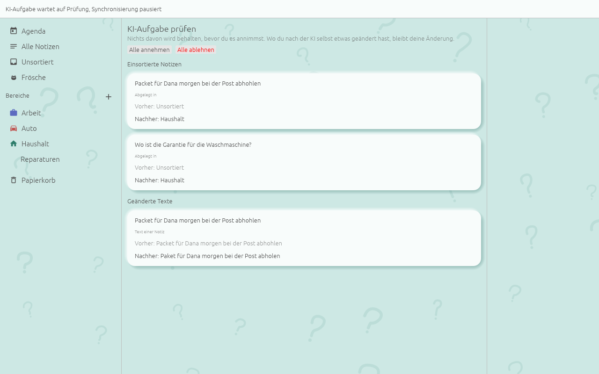
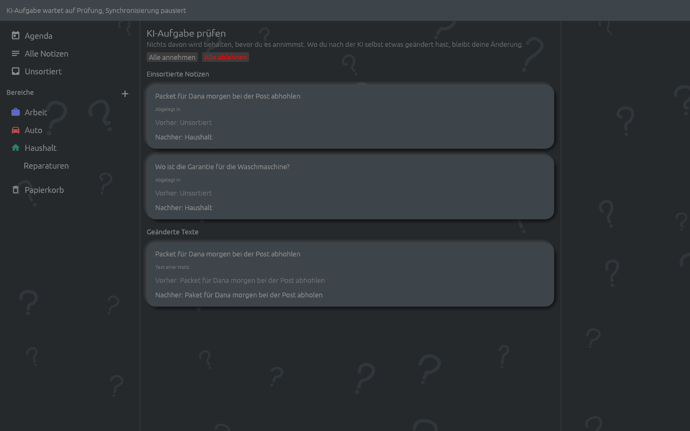

Deine eigenen Geräte gleichen alles miteinander ab. Andere Menschen bekommen nur, was du ihnen gibst: einen Bereich, den du teilst, oder eine einzelne Notiz, die du sendest. Es gibt keinen Server; Änderungen gehen verschlüsselt über dein Heimnetz, über einen geteilten Ordner oder als Dateien über einen beliebigen Messenger.
Das Profilbild in der oberen Ecke der Agenda öffnet die Profilseite: dein Bild, dein Name und dein Code, dann Sicherungen und Wiederherstellung, Deine Geräte, Menschen und Einstellungen dieses Geräts. Dein Profil ist auf all deinen Geräten dasselbe. Ein Tippen auf das Bild ändert es: Bild auswählen, Foto aufnehmen oder, solange es ein Bild hat, Stattdessen Initialen zeigen.
Eine Profilkarte ist dein Name und die Kennung deines Profils, ohne Bild. Sie bringt dich unter die Menschen einer anderen Person; einen Bereich teilt sie nie. Auf der Profilseite:
Unter „Menschen“ nimmt Person hinzufügen die Karte eines anderen Menschen: QR-Code der Person scannen mit der Kamera, QR-Code aus einem Bild wie einem Screenshot, oder der Link, eingefügt unter Profil-Link der Person und Hinzufügen. Ein Kartenlink, der in einer anderen App angetippt wird, öffnet sich ebenfalls in Old Brain Fix (siehe Profilkarte). Danach öffnet sich das Profil der Person; einem Menschen, der neu für dich ist, wird Deins zurückschicken angeboten, damit er dich auch hinzufügen kann.
Jedes Profil hat einen kurzen Code aus acht Zeichen, gebildet aus seiner Kennung und seinem ersten Schlüssel. Ein Mensch ist bestätigt, sobald du persönlich sichergestellt hast, dass der Code seiner ist:
Eine Karte, die als Link oder als QR-Code in einem Bild kam, fügt den Menschen als „Nicht bestätigt: Vergleiche die Codes persönlich, um sicherzugehen.“ hinzu. Gesendete Notizen und geteilte Bereiche von ihm sagen, ob er bestätigt ist.
Ein Tippen auf einen Menschen unter „Menschen“ oder auf sein Bild, wo immer es erscheint, öffnet sein Profil: sein Bild, seinen Namen und Code, ob er bestätigt ist, solange nicht mit Codes vergleichen, und Notizen dieser Person, jede Notiz von ihm, die du sehen kannst. Unter Name und Bild für mich gibst du ihm eine eigene Anzeige, einen Namen und ein Bild, die nur du siehst, auf deinen eigenen Geräten, etwa „Mama“; sein eigener Name und sein Bild bleiben, wie sie sind. Blockieren sitzt in der Leiste (siehe Eine Person blockieren).


Ein geteilter Bereich ist ein Bereich, den andere Menschen mit abgleichen. Nur dieser Bereich geht an sie, mit seinen Themen, Notizen, Routinen, Erinnerungen und ihrem Verlauf; alles außerhalb bleibt privat. In der Liste der Bereiche bietet das ⋮ neben einem Bereich seinem Eigentümer und seinen Verwaltern Teilen … an, und Menschen, sobald er geteilt ist. Ein geteilter Bereich zeigt die Namen seiner Menschen darunter.
Wer einen Bereich als Erster teilt, ist sein erster Verwalter. Unter ⋮ listet Menschen alle darin mit ihrer Rolle. Ein Verwalter hat bei jedem anderen Zum Verwalter machen oder Zum Mitglied machen und Entfernen: An einen entfernten Menschen geht von diesem Bereich nichts mehr, und was er schon hat, bleibt bei ihm.
Teilen … öffnet die Teilen-Seite. Wähle unter „Sie darf“ Mitglied oder Verwalter und triff dann die andere Person, beide Geräte im selben WLAN:
Niemand tippt einen Namen. Sobald sich die Geräte getroffen haben, erscheint ihr Profil mit seinem Code: „Vergleiche den Code mit dem auf ihrer Profilseite. Erst danach wird etwas geteilt.“ Teilen gibt ihrem Gerät diesen Bereich und sonst nichts, und der Bereich gilt von da an als geteilt. Ein Handy teilt mit einem Handy ebenso wie mit einem Computer.
Unter „Jemand, der nicht in der Nähe ist“ listet Teilen mit… die Menschen, an die der Bereich gehen kann; die unbestätigten sind mit „Nicht bestätigt“ markiert. Wähle einen, mit der oben gewählten Rolle. Beim ersten Mal fragt die App „Wie kommen Änderungen zu {Name}?“:
Das Angebot geht als Datei über die App, die du wählst. Die Frage kommt nur, wenn dieses Gerät einen geteilten Ordner nutzen kann; sonst gehen Änderungen als Dateien.
Wer das Angebot bekommt, öffnet die Datei mit Old Brain Fix. Seine Agenda zeigt „1 geteilter Bereich wartet“, bis er entscheidet; die Vorschau sagt, wer welchen Bereich als was teilt und wie Änderungen ankommen. „Vom Bereich wird nichts behalten, bevor du annimmst.“ Codes vergleichen bestätigt den teilenden Menschen beim Annehmen. Annehmen nimmt den Bereich auf und fragt nach dem geteilten Ordner, wenn Änderungen über einen kommen und noch keiner gewählt ist; Ablehnen behält nichts; Ablehnen und blockieren behält nichts und blockiert den teilenden Menschen. Bis die Person annimmt, und auch nach einer Ablehnung, steht sie unter den Menschen des Bereichs, und du entfernst sie wie jeden anderen.


Das ⋮ auf der Karte einer Notiz und die Leiste des Notiz-Editors bieten zwei Wege, eine Notiz weiterzugeben:
„Wer bekommt sie?“ bietet jeden Menschen an, dessen Geräteschlüssel hier bekannt sind, „{Name}, verschlüsselt“, und Irgendwer, unverschlüsselt: Wer diese Datei bekommt, kann sie lesen. „Sie enthält den Text, die Abschnitte und die Routinen und Erinnerungen; keine Fotos, Aufnahmen und nicht, wo sie erfasst wurde.“ Senden gibt die Datei an die App, die du wählst. Dieselbe Notiz noch einmal zu senden schickt sie als Aktualisierung; Stattdessen eine Absage senden lässt die andere Person sie mit ausgeschalteten Alarmen in den Papierkorb legen.
Eine gesendete Notiz, mit Old Brain Fix geöffnet, zeigt ihre Vorschau: wer sie geschickt hat, ob er bestätigt ist („Bestätigt: Code persönlich verglichen.“, „Nicht bestätigt: hier bekannt, Code noch nicht verglichen.“ oder „Nicht bestätigt: Dieses Profil ist hier neu.“, jeweils mit dem Code), ob sie verschlüsselt kam, und ihren Text, ihre Abschnitte, Routinen und Erinnerungen. Annehmen legt sie mit ihren Alarmen in Unsortiert ab und den Absender unter die Menschen; Ablehnen behält nichts; Ablehnen und blockieren behält nichts und blockiert den Absender.
Eine Checkliste kommt mit ihren Zeilen, wie der Absender sie sieht. Eine Einkaufsliste kommt mit ihren Zeilen, jede mit ihrer Wiederkehr („Wiederkehr: 1 Woche“) und alle offen, da bei dir noch keine abgehakt ist; eine Zeile, die der Absender auf Einmal gestellt und abgehakt hat, bleibt bei ihm. Aktualisierungen fügen Zeilen des Absenders hinzu, benennen sie um und entfernen sie; deine eigenen Zeilen, deine Haken und die Wiederkehr, die du eingestellt hast, bleiben.
Eine Aktualisierung zeigt „Was sich ändert“, etwa eine Routine, die von einer Zeit auf eine andere rückt, und Aktualisieren. Deine eigenen Abschnitte, Routinen und Erinnerungen, Erledigt-Haken, die Wichtigkeit und wo du die Notiz abgelegt hast, bleiben, wie sie sind; einen Text, den du selbst geändert hast, ersetzt sie. Eine Absage bietet In den Papierkorb an, von wo die Notiz zurückgeholt werden kann. Nur der Absender kann aktualisieren oder absagen, was er geschickt hat.
Eine gesendete Notiz von jemandem, der nicht unter deinen Menschen ist, wird zurückgehalten: Die Agenda zeigt „1 gesendete Notiz wartet“, und ihre Vorschau sagt nur, von wem sie ist, „Eine unbekannte Person: nicht unter „Menschen“.“ „Was sie gesendet hat, bleibt verborgen, bis du auf „Zeigen“ tippst.“ Annehmen, Ablehnen und Ablehnen und blockieren wirken auch vor Zeigen; Zeigen wird nicht gemerkt, beim nächsten Öffnen ist die Notiz wieder verborgen.
Auf der Profilseite unter „Deine Geräte“ öffnet Mit einem anderen Gerät synchronisieren die Seite „Synchronisieren“. Eigene Geräte koppeln einmal per Code; danach haben beide dieselben Notizen, Bereiche und Routinen. Einstellungen bleiben auf jedem Gerät und werden nie abgeglichen.
Beide Geräte sind im selben WLAN. Eines zeigt seinen Code, das andere scannt oder tippt ihn, in beide Richtungen, auch von Handy zu Handy:
Das Gerät, das den Code zeigt, fragt „{Name} beitreten lassen?“: „Es bekommt alles auf diesem Gerät und synchronisiert sich von da an mit ihm. Sag nur bei einem eigenen Gerät Ja.“ Beitreten lassen koppelt die beiden. Ein Code, der aus deinem Heimnetz hinauszeigt, wird abgewiesen. Hatten beide Geräte ein eigenes Profil, fragt die App „Welches Profil bist du?“; das gewählte bleibt auf all deinen Geräten.
„Gekoppelte Geräte im selben WLAN synchronisieren sich von selbst: während die App offen ist und im Hintergrund jede Viertelstunde.“ Unter „Gekoppelte Geräte“ listet die Seite jedes mit seinem letzten Abgleich und Vergessen; ein Gerät, das im Netz gefunden werden kann, hat außerdem den Schalter Automatisch synchronisieren, der anfangs an ist. Das Gerät eines anderen Menschen, getroffen beim Teilen eines Bereichs vor Ort, steht dort als „Gerät einer anderen Person“ und bekommt nur die Bereiche, die mit ihm geteilt sind.
„Synchronisiert über einen Ordner, den Syncthing, Nextcloud oder ein USB-Stick zwischen deinen Geräten trägt, wo immer sie sind. Alles darin ist verschlüsselt: Nur Geräte, die mit diesem gekoppelt sind, können es lesen.“ Ordner wählen wählt ihn und gleicht sofort darüber ab; die Seite zeigt dann den letzten Abgleich und was hereinkam, und Vergessen hört auf, ihn zu nutzen. Ein Gerät koppelt einmal vor Ort, bevor es den Ordner lesen kann: Dateien von einem Gerät, das nicht mit diesem gekoppelt ist, werden gezählt und nicht gelesen. Ein geteilter Bereich nutzt den geteilten Ordner, den beide Menschen erreichen; der andere Mensch liest dort die Dateien dieses Bereichs und sonst nichts.
Ein Bündel „schickt das Neue als eine Datei über einen beliebigen Messenger oder per Mail, und das andere Gerät importiert sie.“ Dort wählt Für ein gekoppeltes Gerät oder Alles; Bündel senden gibt die Datei an die App, die du wählst, und Bündel importieren nimmt eines auf. Ein Bündel, das aus einem Messenger oder einem Dateimanager mit Old Brain Fix geöffnet wird, wird ebenso importiert. Auch es ist verschlüsselt, und nur ein gekoppeltes Gerät kann es lesen.
Mit einem Menschen, zu dem Änderungen als Dateien gehen, bewegt sich nichts, bis du sie schickst. Seine Profilseite zeigt Änderungen an {Name} schicken, „Als Datei über einen beliebigen Messenger.“: ein Bündel mit dem Neuen in den Bereichen, die mit ihm geteilt sind, für all seine Geräte.
Der Änderungs-Stupser erinnert dich daran: eine Benachrichtigung wie „Änderungen für Bob und Carol“, 30 Minuten nach der ersten Änderung, die noch kein Bündel zu ihnen trug, eine für alle, die warten. Er kommt wieder wie der Stupser, nach dessen Wiederholungszeit, und wartet in der Ruhezeit. Ein Tippen darauf bietet nacheinander das Bündel jedes Menschen an, eine App-Auswahl nach der anderen; eine Auswahl, die ohne App verlassen wird, lässt den Änderungs-Stupser für diesen Menschen stehen.
Manche Änderungen warten auf deine Entscheidung, bevor etwas davon behalten wird: ein Bereich, der dir aus der Ferne angeboten wird, eine gesendete Notiz von jemandem, der nicht unter deinen Menschen ist, und auf dem Desktop eine KI-Aufgabe. Sie warten, auch über einen Neustart hinweg, bis du sie annimmst oder ablehnst; ablehnen lässt nichts zurück.
Haben zwei Geräte dasselbe geändert, bevor sie sich abgeglichen haben, wird die neuere Fassung gezeigt, und „Synchronisieren“ listet einen Konflikt: den Text einer Notiz, einen zu einer Notiz hinzugefügten Text, eine Zeile einer Checkliste oder Einkaufsliste, den Namen eines Bereichs, eines Themas oder eines benannten Orts, den Radius eines benannten Orts oder den Zeitplan einer Routine. Jede Fassung sagt, auf welchem Gerät und wann sie geschrieben wurde; ein Tippen auf Diese Fassung behalten behält sie. Ein Abgleich, der Konflikte brachte, sagt es oben an, und ein Tippen dort führt zu ihnen.
Auf dem Desktop kann ein KI-Modell deiner Wahl für eine Aufgabe an deinen Notizen arbeiten, etwa Tippfehler beheben. Einstellungen, KI-Port öffnen öffnet einen Port, den nur dieser Computer mit seinem Token erreicht, und zeigt seine Adresse mit Wegen, zu kopieren, was ein Client braucht: Client-Konfiguration kopieren für MCP-Clients, die über HTTP verbinden, Befehl für Claude Code kopieren und Konfiguration für Claude Desktop kopieren. Solange der Port offen ist und bis zur Prüfung ist der Abgleich pausiert, und ein Banner sagt es.
Fertig, prüfen schließt den Port und öffnet „KI-Aufgabe prüfen“: jede Änderung, nach Art gruppiert, etwa einsortierte Notizen und geänderte Texte, jede mit Vorher und Nachher. „Nichts davon wird behalten, bevor du es annimmst.“ Alle annehmen behält jede Änderung; Alle ablehnen fragt einmal und behält keine. Wo du nach der KI selbst etwas geändert hast, bleibt deine Änderung, markiert mit „Deine Änderung bleibt“. Es läuft immer nur eine KI-Aufgabe.

